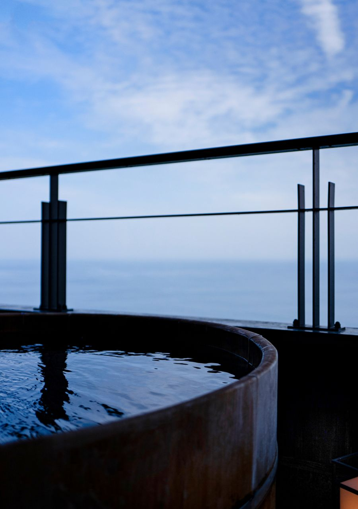
( 01 ) 全室に、天然温泉の露天風呂を。すべての客室に、露天風呂がついています。体の修復を助ける、やわらかな硫酸塩温泉が心と身体を癒します。
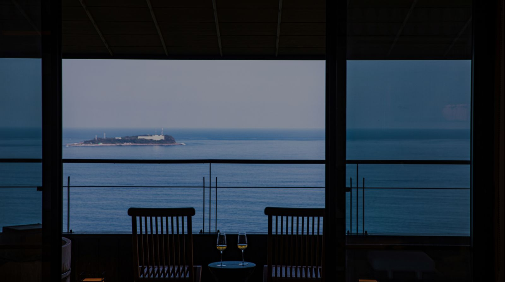
【客室】
Nothing here
but the sea.
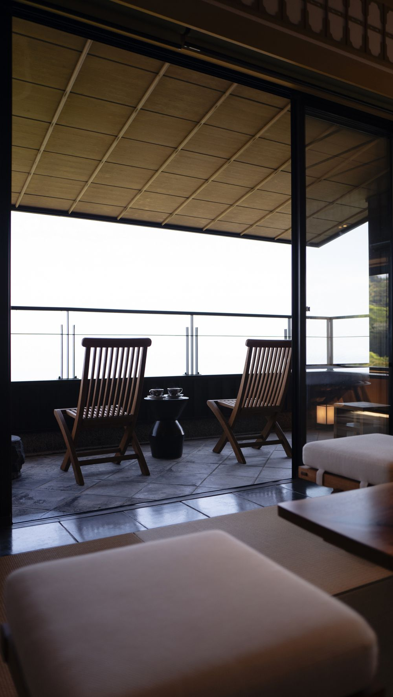
山龢には、貴賓館、本館あわせて
8つの客室があります。
それぞれに趣の異なる、
個性豊かな空間です。
扉を開ければ、やわらかな風とともに、
自然の気配がそっと入り込みます。
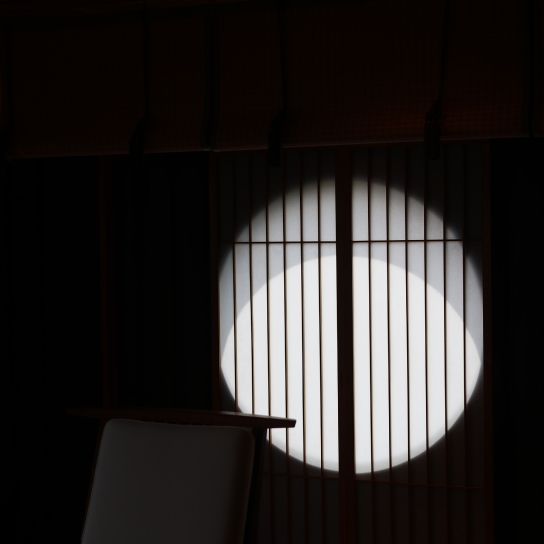
モダンでハイクラスなインテリアと、
情緒豊かな景色が重なり合い、
ここで過ごす時間に、
静かな奥行きをもたらします。

( 01 ) 全室に、天然温泉の露天風呂を。すべての客室に、露天風呂がついています。体の修復を助ける、やわらかな硫酸塩温泉が心と身体を癒します。
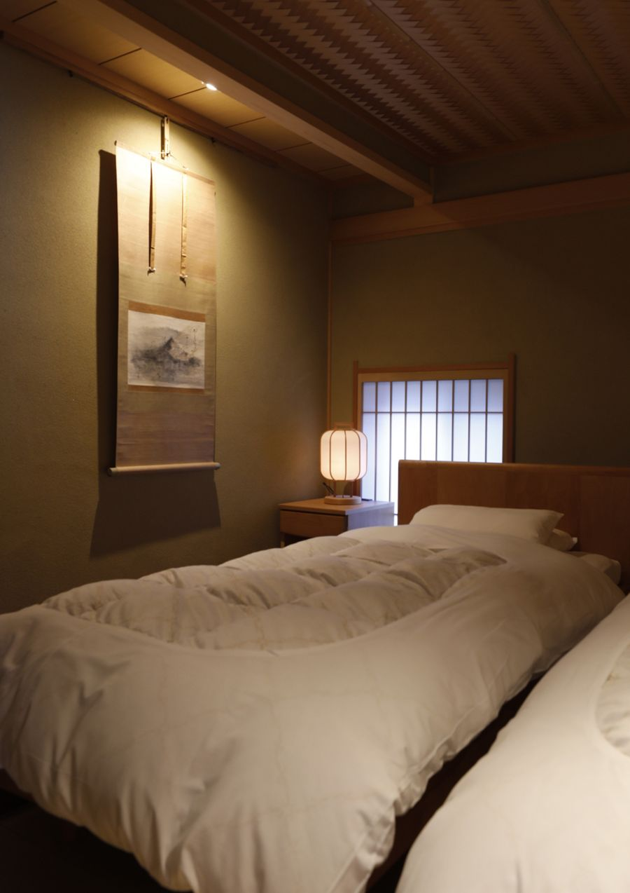
( 02 ) 創業１９０年の最高級寝具を。すべてのお部屋の寝具は、創業1830年、京都の老舗・イワタ社の最高級品を使用しています。
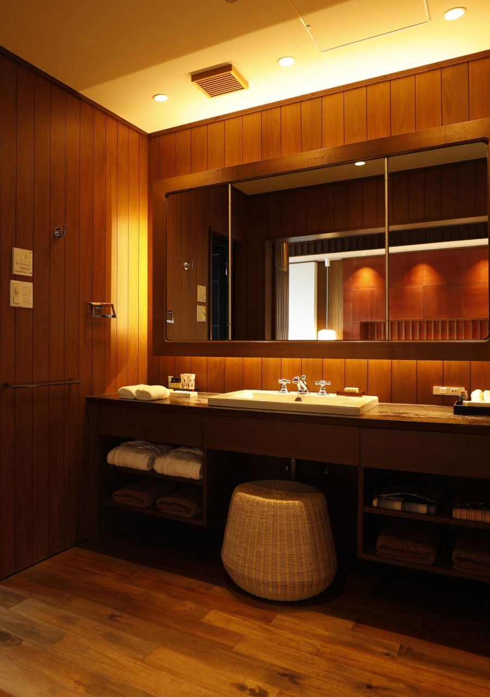
( 03 ) 世界最高峰の綿のタオルを。タオル類には、繊維の宝石と称される海島綿を使用しています。（日本橋の老舗・内野社製）
山龢は本館・貴賓館の2棟からなります。貴賓館は各フロアに1室のみ。本館は各フロアに2室を備えておりますが、いずれもフロアを独占してお過ごしいただける設えです。
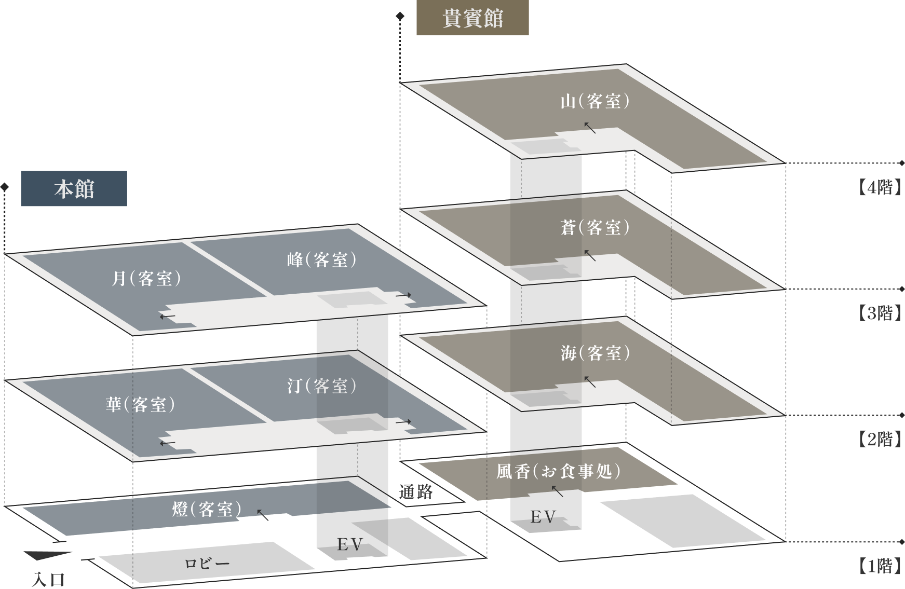
貴賓館（ Kihinkan ）
1フロアに1部屋の、広々としたプライベート感あふれるお部屋で、1ランク上の滞在をお愉しみいただけます。「山」「蒼」「海」、すべてのお部屋には専用のお食事処をご用意しております。
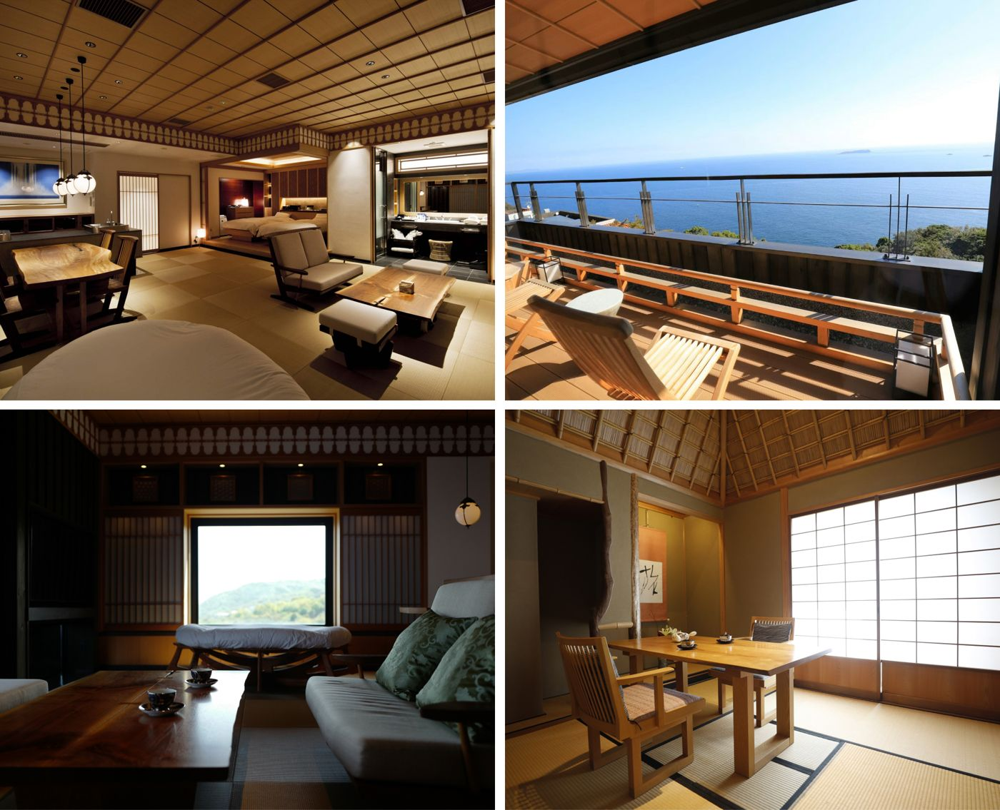
テレビ ／ Wi-Fi ／ ミキモト（洗顔 ／ メイク落とし ／ スキンケア用品 ／ シャンプー ／ リンス等） 空気清浄加湿器 ／ 浴衣 ／ バスローブ ／ ドライヤー ／ タオル類 ／ 歯ブラシ
冷蔵庫内飲料（熱海ビール ／ 他アルコール ／ 伊豆天然水ミネラルウォーター ／ みかんジュース等）無料※追加御注文は有料となります
冷凍庫内（銀座千疋屋プレミアムシャーベット ／ 氷）無料※追加御注文は有料となります
煎茶、コーヒーカプセル 無料※追加御注文は有料となります
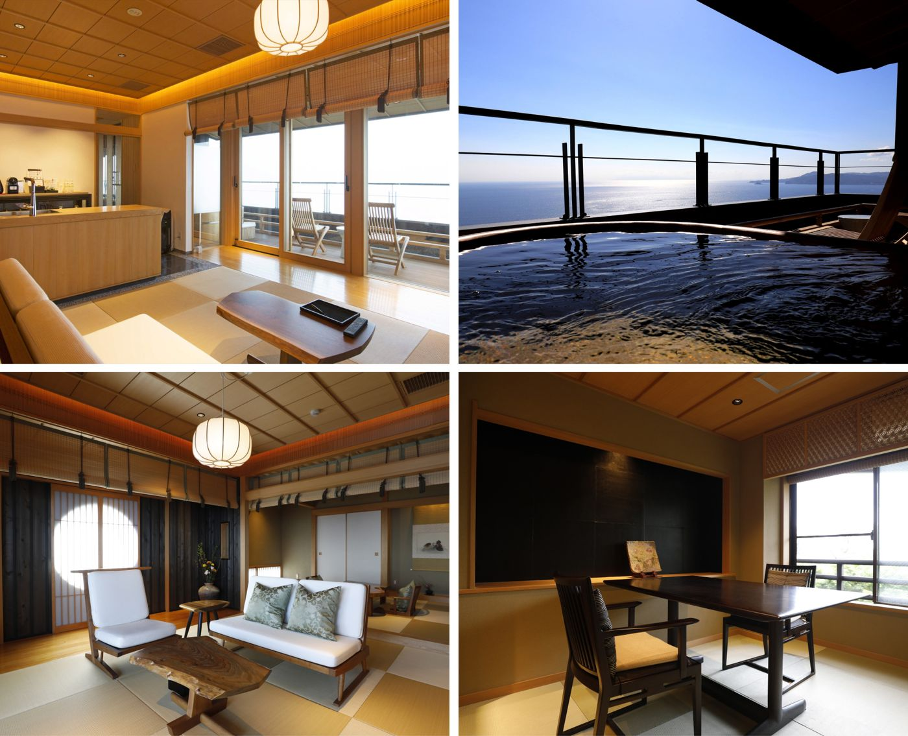
テレビ・Wi-Fi・アメニティ（洗顔・メイク落とし・スキンケア用品・シャンプー・リンス等） 空気清浄加湿器・浴衣・バスローブ・ドライヤー・タオル類・歯ブラシ
冷蔵庫内飲料（熱海ビール、他アルコール、静岡天然水ミネラルウォーター、ソフトドリンク等）無料※追加御注文は有料となります
冷凍庫内（銀座千疋屋プレミアムシャーベット、氷）無料※冷凍庫内銀座千疋屋プレミアムシャーベットは2食付きプラン利用時のみです。素泊まりプラン、朝食付きプランには付きません。追加御注文は有料となります。
煎茶、コーヒーカプセル 無料※追加御注文は有料となります
本館（ Honkan ）
ご利用いただきやすい価格帯にしつつ、山龢のモダンでハイクラスなインテリアと情緒豊かな自然の景色をお愉しみいただけます。お食事は貴賓館1階の個室料亭「風香」でお召し上がりいただきます。
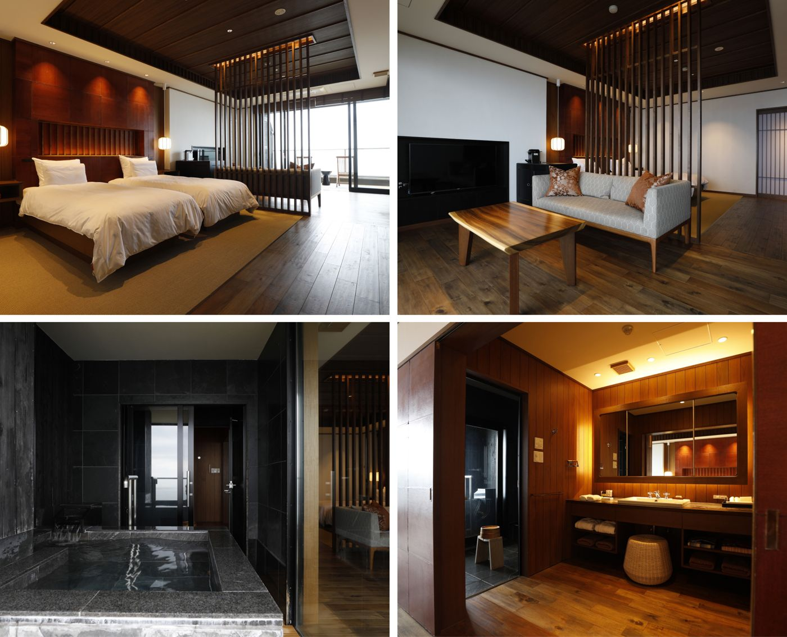
テレビ・Wi-Fi・アメニティー（洗顔・メイク落とし・スキンケア用品・シャンプー・リンス等） 空気清浄加湿器・浴衣・バスローブ・ドライヤー・タオル類・歯ブラシ
冷蔵庫内飲料（熱海ビール ／ 他アルコール ／ 伊豆天然水ミネラルウォーター ／ みかんジュース等）無料 煎茶、コーヒーカプセル、ミネラルウォーター無料※追加御注文は有料となります
冷凍庫内（銀座千疋屋プレミアムシャーベット ／ 氷）無料※追加御注文は有料となります
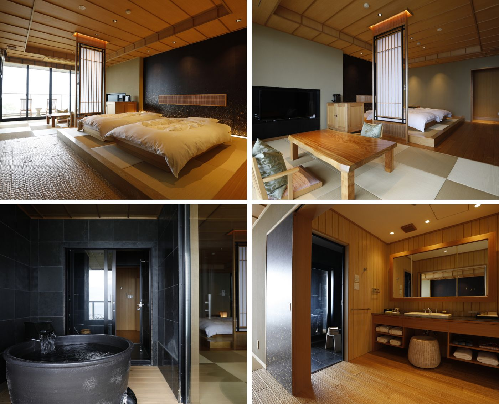
テレビ・Wi-Fi・アメニティー（洗顔・メイク落とし・スキンケア用品・シャンプー・リンス等） 空気清浄加湿器・浴衣・バスローブ・ドライヤー・タオル類・歯ブラシ
冷蔵庫内飲料（熱海ビール ／ 他アルコール ／ 伊豆天然水ミネラルウォーター ／ みかんジュース等）無料 煎茶、コーヒーカプセル、ミネラルウォーター無料※追加御注文は有料となります
冷凍庫内（銀座千疋屋プレミアムシャーベット ／ 氷）無料※追加御注文は有料となります
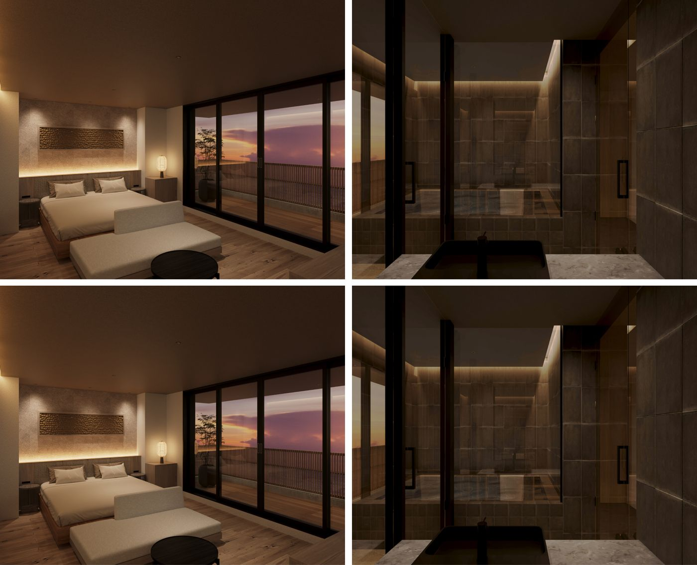
テレビ・Wi-Fi・アメニティー（洗顔・メイク落とし・スキンケア用品・シャンプー・リンス等） 空気清浄加湿器・浴衣・バスローブ・ドライヤー・タオル類・歯ブラシ
冷蔵庫内飲料（熱海ビール ／ 他アルコール ／ 伊豆天然水ミネラルウォーター ／ みかんジュース等）無料 煎茶、コーヒーカプセル、ミネラルウォーター無料※追加御注文は有料となります
冷凍庫内（銀座千疋屋プレミアムシャーベット ／ 氷）無料※追加御注文は有料となります